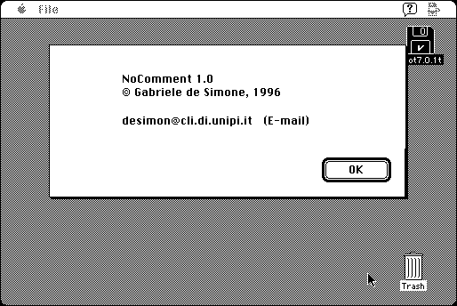

Download
nocomment-10.zip (16K) NoComment 1.0 repackaged into a zipped hfs disk image and checksum file. The disk image can be mounted with Mini vMac.
nocomment-10.hqx (16K) NoComment 1.0 in the original format.
copyright: Gabriele de Simone
mod date: Oct 10, 1996
license: freeware
last known url
(gone)
“Removes StuffIt comments from any StuffIt archive”, so as to avoid getting “additional SimpleText files when an archive that contains comments is decompressed with Stuffit Expander”. Requires System 7.

If you find these downloads useful, please consider helping the Gryphel Project, which hosts them.
Here are the md5 checksums for the downloads, signed with Gryphel Key 5:
--------- GRY SIGNED TEXT --------- 65beb2a0f2eb9e148701351da0ca63b4 nocomment-10.zip 97347180db87526ef744d30050434ea7 nocomment-10.hqx ------- BEGIN GRY SIGNATURE ------- Gry/4Xa8CFcUzxdN/Fsiku8NqhAAkGpA85yEHpM0xyprbh3bLx3ZvSLSuL+wTnFC aKiZDeDpWKrir8LfUgZLwgRb4zKNf9WTEglqeBRfCTpuzPFBoerAwb5tsgRdHpIb UmfKtoDgRpVfCyYBeIhbGgLE/v3mS+aMP9ItcshhLvkH85yCeYwMzENFBwicm5O6 -------- END GRY SIGNATURE --------